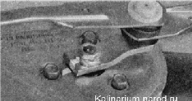
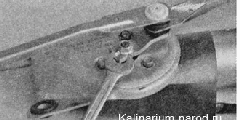
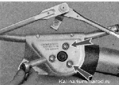
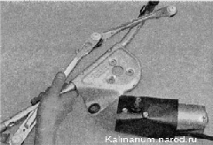

Замена мото-редуктора очистителя ветрового стеклаСнятие 1. Снимаем стеклоочиститель с автомобиля. 2. Помечаем или запоминаем положение кривошипа относительно тяг стеклоочистителя. 
3. Ключом на 13 мм отворачиваем гайку крепления рычага. 
4. Шлицевой отверткой с широким лезвием поддеваем и снимаем кривошип со шлицев вала моторредуктора. 5. Накидным ключом па 10 мм отворачиваем три болта крепления мотор-редуктора к кронштейну стеклоочистителя. 
6. Снимаем мотор-редуктор с кронштейна. 
Установка Перед сборкой стеклоочистителя необходимо убедиться в том, что вал нового мотор-редуктора находится в исходном положении. В противном случае правильная работа стеклоочистителя будет невозможна. 1. Для установки вала нового мотор-редуктора в исходное положение подсоединяем колодку жгута его проводов к соответствующей колодке на автомобиле и кратковременно включаем стеклоочиститель в прерывистый режим. После того как мотор-редуктор отработает полный цикл и автоматически остановится, выключаем зажигание и отсоединяем его от электрической цепи автомобиля. 2. Устанавливаем кривошип на вал мотор-редуктора в соответствии с меткой, сделанной при разборке (или ориентируясь по положению тяг, см. выше). Накидным ключом на 13 мм заворачиваем гайку крепления кривошипа. 3. Устанавливаем стеклоочиститель на автомобиль. |